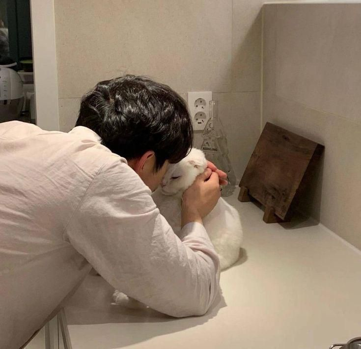

.jpg)

.jpg)
Cats are among the most fascinating and beloved animals in the world. They are known for their graceful movements, soft fur, and independent nature. Unlike many pets, cats do not always demand constant attention, yet they form strong bonds with their owners. Their calm presence and soothing purring make them perfect companions for people of all ages.
One of the most interesting things about cats is their intelligence and curiosity. They are excellent hunters with sharp senses that help them detect even the smallest movements. Cats love exploring their surroundings, climbing high places, and observing everything quietly. This curious behavior makes them both playful and mysterious at the same time.
Cats also bring comfort and emotional support to humans. Many people feel relaxed and less stressed when they spend time with a cat. Their gentle behavior and affectionate nature can brighten even the hardest day. Whether they are playing, sleeping in a sunny spot, or simply sitting beside you, cats have a special way of making life more peaceful and joyful.
Cats have a long history of living alongside humans that goes back thousands of years. They were first domesticated in the ancient world, especially in regions like ancient Egypt, where people valued them for protecting food supplies from rats and mice. Over time, cats spread to different parts of the world through trade and travel, becoming common household animals in many cultures.In many ancient societies, cats were not only useful but also respected and sometimes even worshipped. For example, in ancient Egypt they were associated with protection and good fortune, and harming a cat was considered a serious crime. As centuries passed, cats gradually became more common as pets rather than sacred animals, and today they are one of the most popular companion animals worldwide.